窗口组件
- 认识 QWidget 类。
- 拖放操作。
- 剪贴板操作。
- 调色板。
QWidget 类
QtWidgets模块中提供了已封装好的可视化组件（或称为部件)。其中，QWidget是所有可视化组件的公共基类。QWidget类派生自QObject类，支持事件处理以及信号、槽等功能；同时，它也派生自QPaintDevice类，支持使用 QPainter 类进行绘图。
与QWindow类相似，QWidget 对象之间也可以建立层级关系。通常，处于顶层的 QWidget对象拥有标题栏和边框，即一个独立的窗口。而作为子级的QWidget对象会成为窗口上的组件（或称为控件)。QWidget 对象可以通过构造函数参数或者调用 setParent方法来建立父子窗口。
当应用程序使用了QtWidgets模块中的类型后，应用程序类应使用 QApplication，而不是QGuiApplication。尽管 QApplication 是 QGuiApplication 的子类，但 QApplication 类提供了与 QWidget对象适配的功能，如 allWidgets、widgetAt等方法成员。
5.1.1 示例：QWidget 类的简单用法
QWidget类可以直接实例化使用，它会显示一个空白的窗口，也可以从QWidget类派生出自定义类型。本示例分别演示这两种方案。
直接创建QWidget 实例，调用resize方法设置窗口大小，调用setWindowTitle方法设置窗口标题（标题栏中的文本)，最后调用show方法显示窗口。
#直接使用QWidget类
window = QWidget()
#设置窗口标题
window.setWindowTitle("示例窗口")
#设置窗口大小
window.resize(300, 250)
#显示窗口
window.show()另一种方案是定义 TestWidget 类，基类是 QWidget 类。
class TestWidget(QWidget):
def __init__(self, parent: QWidget = None):
#调用基类的构造函数
super().__init__(parent)
#设置窗口位置和大小
self.setGeometry(905,480, 280, 180)
#设置窗口标题
self.setWindowTitle("自定义窗口")自定义类可以封装一些初始化代码，例如调整窗口大小、设置标题文本等。TestWidget类在实例化之后，可以调用从基类继承的show方法来显示窗口。
window2 = TestWidget()
window2.show()完整的应用程序初始化代码如下：
#实例化应用程序类
app = QApplication()
#直接使用 QWidget类
window = QWidget()
#设置窗口标题
window.setWindowTitle("示例窗口")
#设置窗口大小
window.resize(300, 250)
#显示窗口
window.show()
#使用自定义窗口类
window2 = TestWidget()
#显示窗口
window2.show()
#进入消息循环
QApplication.exec()本示例运行后会呈现两个窗口，如图5-1所示。关闭其中任一窗口后程序不会退出，只有当所有窗口都被关闭后，程序才会退出。
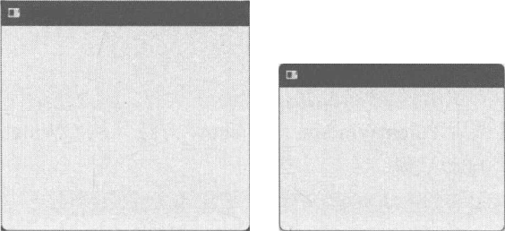
5.1.2 示例：父子窗口
QWidget对象可以通过构造函数或setParent方法设置父级部件（或父窗口)。本示例演示了两个存在嵌套关系的 QWidget 对象，它们都是 QWidget 的派生类。ParentWindow类作为顶层部件，呈现为父级窗口；ChildWidget类将嵌套在ParentWindow内部，呈现为子窗口。
ParentWindow类的实现代码如下：
class ParentWindow(QWidget):
def paintEvent(self, event: QPaintEvent):
#获取窗口默认的背景颜色
winbg = self.palette().brush(QPalette.ColorRole.Window)
#获取默认的文本颜色
textbrush = self.palette().text()
painter = QPainter(self)
#填充窗口的客户区域
painter.fillRect(event.rect(), winbg)
#在窗口左上角绘制文本
painter.setPen(QPen(textbrush, 1))
painter.drawText(20,20,'父窗口')
painter.end()上述代码只重写了paintEvent方法。通过palette方法可以获取与当前QWidget对象关联的调色板—QPalette，然后调用 brush方法并传递 ColorRole.Window 枚举值，可以得到用于绘制窗口背景的默认画刷，随后使用该画刷填充窗口的客户区域，最后绘制文本“父窗口”。
ChildWidget类的实现与ParentWindow类似，也是重写paintEvent方法，在客户区域的正中心绘制文本“子窗口”。代码如下：
class ChildWidget(QWidget):
def paintEvent(self, event: QPaintEvent):
#获取默认文本颜色
textcl = self.palette().text()
painter = QPainter(self)
painter.setPen(QPen(textcl, 1))
#填充部件区域
painter.fillRect(event.rect(), QColor('skyblue'))
#在中心位置绘制文本
painter.drawText(event.rect(),Qt.AlignmentFlag.AlignCenter,'子窗口')
painter.end()在使用时先实例化 ParentWindow 类，再实例化 ChildWidget 类。ParentWindow 对象通过构造函数传递给 ChildWidget 对象，让它们建立层级关系。
#实例化父窗口
wparent = ParentWindow()
wparent.setWindowTitle('示例程序')
wparent.resize(370, 285)
#实例化子窗口
wsub = ChildWidget(wparent)
wsub.setGeometry(123, 100, 160, 100)在显示窗口时，只需要调用 ParentWindow 对象的 show方法（从QWidget 类继承的成员）即可，嵌套的子部件（或子窗口）会自动呈现。
wparent.show()运行结果如图 5-2所示。
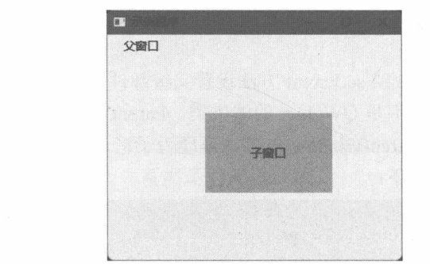
窗口的显示方式
以下方法都能够使QWidget对象变为可见状态，显现到屏幕上。
- show：以平台默认方式显示QWidget对象以及它的子级对象。
- showMaximized：最大化窗口。
- showMinimized：窗口呈现为最小化状态。
- showFullScreen：窗口全屏显示。可以调用showNormal方法退出全屏。
- showNormal：还原窗口为常规大小，指窗口全屏、最大化或最小化之后。
其中，只有 show 方法可用于 QWidget 的各子类，而 showFullScreen、showMaximized、showNormal等方法只对窗口有效，即QWidget对象必须呈现为窗口。
下面的示例演示了一个可以进入和退出全屏模式的窗口。
class MyWindow(QWidget):
def __init__(self, parent: QWidget = None):
if parent == None:
super().__init__()
else:
super().__init__(parent)
#设置窗口参数
self.setWindowTitle("示例程序")
self.setGeometry(760, 500, 320, 275)
#实例化两个按钮
self._btn1 = QPushButton('进入全屏模式', parent = self)
self._btn2 = QPushButton('退出全屏模式', parent = self)
#设置按钮在窗口中的位置和大小
self._btn1.setGeometry(35, 40, 125, 32)
self._btn2.setGeometry(35, 80, 125, 32)
#clicked信号与槽建立连接
self._btn1.clicked.connect(self.onEnterFullScreen)
self._btn2.clicked.connect(self.onExitFullScreen)
#两个槽函数
def onEnterFullScreen(self):
if self.isFullScreen() == False:
self.showFullScreen()
def onExitFullScreen(self):
if self.isFullScreen() == True:
self.showNormal()MyWindow派生自QWidget类，代表一个顶层窗口。窗口内放置了两个按钮组件（QPushButton)，按钮被单击后会发出 clicked 信号。两个按钮的 clicked 信息分别绑定了MyWindow 类的实例方法onEnterFullScreen和 onExitFullScreen。
在 onEnterFullScreen方法内，首先调用 isFullScreen方法判断当前窗口是否已处于全屏模式，若不是就调用 showFullScreen方法让窗口全屏显示。
在 onExitFullScreen方法内，也是先通过isFullScreen方法检查当前窗口是否进入了全屏模式。如果是，就调用 showNormal 方法还原窗口。
示例运行后，窗口默认的显示方式如图5-3所示。单击“进入全屏模式”按钮后，窗口的标题栏和边框被隐藏，并且占满整个屏幕，如图5-4所示。单击“退出全屏模式”按钮后，窗口恢复默认显示。
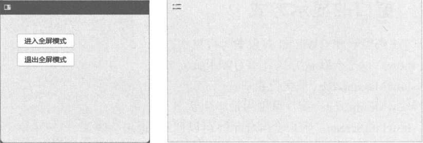
图 5-4 窗口全屏显示
拖放操作
拖放是通过鼠标（笔或者触控）将数据从一个对象传递到另一个对象的过程。拖放操作分为两个阶段，即“拖动”（Drag）和“放置”（Drop）。
用户在数据源头按下鼠标按键（一般用左键，具体取决于程序逻辑)，拖动操作启动。此时应用程序负责将要发送的数据“打包”(封装)。按住鼠标按键不放并将指针移动到目标对象上(如另一个应用程序或另一个窗口），进入放置操作阶段。当鼠标按键被释放时，目标对象（数据接收者）需要验证数据格式是否满足要求，如果符合就接收并处理数据，否则拒绝数据。
一个完整的拖动操作始于拖动数据，终于释放到目标对象上。如果数据未拖动到目标对象上就释放了鼠标按键，那么拖放操作就被取消，数据不会传递。如果目标对象不支持放置行为，拖放操作也无法完成。
QWidget类（包括它的子类）默认是不支持拖放的，将数据拖放到组件（或窗口）上时，鼠标指针会显示为“禁用”图标，如图5-5所示。
调用 setAcceptDrops(True)方法使窗口组件支持放置操作后，再把数据拖进去，窗口不再显示“禁用”图标，如图 5-6所示。
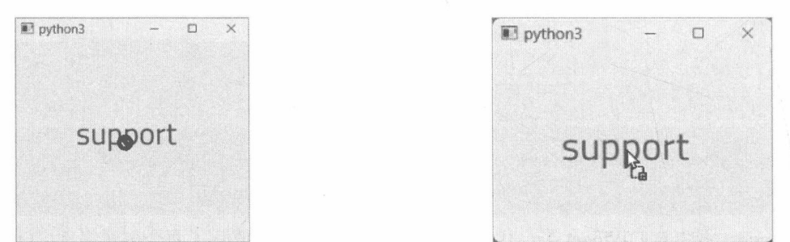
图 5-6 窗口支持拖放
5.3.1 QMimeData 类
QMimeData 是容器类，以MIME所指定的格式来存储数据，例如 text/plain格式用于存储普通文本，image/png 用于存储 PNG 格式的图像文件。
QMimeData 可以将存储的数据用于剪贴板(Clip board)和拖放(Drag and drop)。对于常见的 MIME类型，可以直接调用QMimeData类已封装好的方法成员来设置数据。
- setText:存储普通文本。
- setHtml：存储 HTML 格式的文本。
- setUrls:存储URL 列表。
- setImageData：存储图像数据（主要是 QImage 对象)。
- setColorData：存储颜色数据（主要是 QColor 对象)。
为了便于获取数据，QMimeData 类还公开了text、html、urls、imageData、colorData等方法。同时，hasText、hasHtml、hasUrls、hasImage、hasColor等方法可用于检测 QMimeData 中是否包含指定类型的数据。
如果要存储的数据格式不在上述所列的常用方法内，也可以使用setData方法，以字节序列的方式存储数据。
5.3.2 QDrag 类
QDrag类的功能是启动一个拖放行为。该类在实例化时必须指定一个父级对象，因为它要添加到Qt 的对象树中，由Qt 负责管理其生命周期。假设在 QWidget 的子类中使用 QDrag类，可以将 self引用传递给 QDrag 类的构造函数。
drag = QDrag(self)拖动操作起始于鼠标按键（例如左键）的按下，因此可以在QWidget的子类中重写mousePressEvent方法。在方法内部实例化 QDrag 类，然后创建 QMimeData 对象，用于存储待传递的数据。随后调用QDrag 对象的 setMimeData 方法设置对 QMimeData 对象的引用。一切准备就绪后，调用 QDrag 对象的exec方法正式启动拖放操作。
5.3.3 DropAction 枚举
DropAction枚举（支持标志位，多个值可以合并使用）表示在拖放操作完成后，应用程序该如何处理传递的数据。常用的成员如下。
- CopyAction：表示复制数据，发送方应当保留数据。
- MoveAction：移动数据，接收方读取数据后，发送方可以删除数据。
- LinkAction：建立从发送方到接收方之间的连接。
- IgnoreAction：忽略，对数据不做任何处理。
QDrag对象调用 exec方法启动一个拖放操作。该方法常用的两个重载如下：
def exec(supportedActions: Qt.DropAction = ...) -> Qt.DropAction
def exec(supportedActions: Qt.DropAction, defaultAction: Qt.DropAction) ->Qt.DropAction其中，supportedActions参数指定此次拖放操作所支持的 DropAction 值，可以多值组合。defaultAction参数指定数据发送者推荐的DropAction值，这个值必须是在 supportedActions参数中已存在的，否则无效。同理，数据接收者如果要修改 DropAction 值，也必须选择 supportedActions参数中已指定的值。若未提供defaultAction 参数，那么应用程序会按照 Move > Copy > Link 的优先级进行取值。例如，supportedActions参数同时指定 CopyAction 和 MoveAction，那么依据优先级，应用程序会选择MoveAction。
假设 supportedActions 参数指定的值为 CopyAction 和 MoveAction，那么 defaultAction 参数可选的有效值只有两个——CopyAction 或 MoveAction。如果 defaultAction 参数指定了 LinkAction，那么应用程序会默认选择 CopyAction，其优先级为 Copy > Move > Link。
exec 方法的返回值也是 DropAction 枚举的值，取值范围同样限制在 supportedActions 参数所指定的值中（IgnoreAction除外)。defaultAction参数仅为数据接收者提供一个建议值，数据接收者可能会修改为其他的DropAction值。如果接收者所设置的值不在supportedActions的范围内，那么最后的操作结果也是按照 Copy > Move > Link 的优先级进行选择。
在鼠标指针拖动过程中，不同的DropAction值会呈现出不同的图标，详见表 5-1。
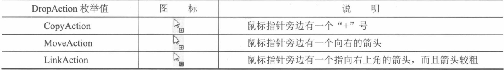
5.3.4 示例：拖放数据到其他程序
本示例将实现通过拖放将文本内容传递给其他应用程序。启动拖放操作最简单的方法是处理MouseButtonPress 事件，然后调用 QDrag 类的 exec 方法。但这种方法有缺陷：用户可能只是想单击某个对象而不希望触发拖放操作。
为了避免此问题，建议的做法是在处理MouseButtonPress事件时记录鼠标按下时指针所在的坐标，然后处理MouseMove事件（鼠标指针在对象上移动），如果鼠标按键仍然处于按下状态，并且移动的距离（与鼠标按下时的坐标比较）大于QApplication.startDragDistance()返回的值，就通过 QDrag 对象启动拖放操作。
本示例从QWidget类派生出一个自定义窗口，并且窗口上有一个QLabel组件（标签，可显示文本或图像)。用户可以在此QLabel对象上将文本数据拖放到其他应用中。
class CustWindow(QWidget):
def __init__(self, parent: QWidget = None):
super().__init__(parent)
#设置窗口基本参数
self.setWindowTitle("示例窗口")
self.resize(300, 300)
#初始化标签组件
self._lb = QLabel(parent=self)
#设置图像
bitmap = QPixmap("fd.png").scaled(
200, 200,
Qt.AspectRatioMode.KeepAspectRatio,
Qt.TransformationMode.SmoothTransformation
)
self._lb.setPixmap(bitmap)
self._lb.move(30, 32)
self._lb.resize(200,200)
self._lb.installEventFilter(self)
#鼠标按下时的坐标
self._pressedPos = QPoint()非 QLabel子类中的代码无法重写 mouseMoveEvent 方法，但可以通过事件筛选的方法处理鼠标按下和指针移动等事件。在QLabel对象上安装事件筛选器，并且eventFilter方法在自定义窗口中处理。
def eventFilter(self, watched: QObject, event: QEvent) -> bool:
if watched == self._lb:
#鼠标按下事件
if event.type() == QEvent.Type.MouseButtonPress:
mouseEvt: QMouseEvent = event
#记录鼠标按下时的坐标
if mouseEvt.button() == Qt.MouseButton.LeftButton:
self._pressedPos = mouseEvt.position().toPoint()
return True
if event.type() == QEvent.Type.MouseMove:
mouseEvt: QMouseEvent = event
#确保鼠标仍处于按下状态并且拖放操作未开始
if Qt.MouseButton.LeftButton in mouseEvt.buttons():
#与按下时的坐标相比较，确保鼠标移动了一定的距离才会被认为是拖动行为
thePos = mouseEvt.position().toPoint()
if (self._pressedPos - thePos).manhattanLength() > \
QApplication.startDragDistance():
#启动拖动操作
drag = QDrag(self._lb)
#设置文本数据
data = QMimeData()
data.setText("电灯泡")
drag.setMimeData(data)
#开始拖放
res = drag.exec(
Qt.DropAction.CopyAction | Qt.DropAction.MoveAction,
Qt.DropAction.CopyAction
)
#处理操作结果
if res == Qt.DropAction.IgnoreAction:
QMessageBox.information(
self, '提示', '拖放已取消',
QMessageBox.StandardButton.Ok
)
else:
s = f'拖放操作结束，结果：{res}'
QMessageBox.information(
self, '提示', s,
QMessageBox.StandardButton.Ok
)
return True
return super().eventFilter(watched, event)当发生 MouseButtonPress 事件时，记录当前位置，保存在 pressedPos变量中。在 MouseMove事件发生时，启动拖放操作。QMimeData.setText方法可以方便设置文本数据。QDrag对象的 exec方法调用后不会马上返回，而是等到拖放操作完成（或取消）后才会返回DropAction枚举的值。因此，开发人员不用担心因 MouseMove 事件多次触发而导致重复调用 QDrag.exec 方法。在 Linux、macOS 上，exec方法进行拖放期间不会阻塞事件循环，应用程序能正常处理其他事件。而在Windows上，事件循环会被阻塞，但exec方法在处理过程中会多次调用processEvents方法使窗口保持响应状态。
如果 exec 方法返回DropAction.IgnoreAction，表明拖放操作被取消或被忽略，其他值则表明数据已传递。拖放操作完成后调用QMessageBox类的静态方法弹出对话框，显示操作结果。
运行示例程序后，打开一个支持拖放的文本编辑器（例如记事本)，然后使用鼠标左键按住示例窗口中电灯泡图像并拖动到文本编辑器，如图5-7所示。最后文本编辑器将接收到文本“电灯泡”，如图 5-8 所示。
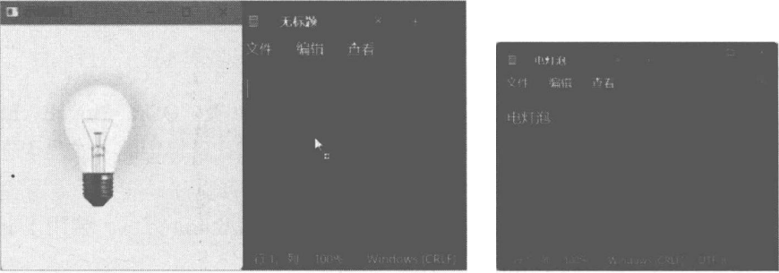
图 5-8 成功传递文本数据
5.3.5 拖放事件
拖放操作过程中，通常会引发以下事件。
- 当鼠标指针进入某个 QWidget 对象时引发 DragEnter 事件。
- 当鼠标指针进入某个 QWidget 对象后，在该对象上移动会引发DragMove事件。
- 鼠标指针离开某个 QWidget 对象时引发 DragLeave 事件。
- 鼠标按键被释放，拖放操作完成时引发Drop事件。
应用程序处理这些事件，可以实现自定义的响应行为。例如，当鼠标指针进入当前组件时，将组件的背景色改为红色，当指针离开当前对象时，恢复原来的背景色。
5.3.6 QDropEvent
QDropEvent 是 Drop 事件的参数，也是 QDragMoveEvent、QDragEnterEvent 的基类。当拖放操作完成时发生Drop事件，此时应用程序需要读取传入的数据，并设置与操作结果相关的DropAction值。
调用 mimeData 方法获得 QMimeData 对象的引用。可以先通过 hasText、hasHtml、hasImage、hasColor等方法判断是否存在程序所需要的数据格式。如果在启动拖放操作时通过setData方法设置自定义数据，那么就要用 hasFormat 方法来检测是否存在指定 MIME 类型的数据，再用 data 方法读取（返回的内容为字节序列）。
QDropEvent类内部用了三个字段来存储DropAction枚举的值，它们有各自的含义。
- 允许使用的 DropAction 值，由 DropEvent.possibleActions 方法返回。该值来自 QDrag.exec 方法中 supportedActions参数所指定的值。
- 默认值，它来源于 QDrag.exec 方法中 defaultAction 参数所指定的值，即数据发送者建议使用的值，通过QDropEvent.proposedAction 方法返回。
- 实际被使用的值，此值在接收数据时设置。可通过 QDropEvent.dropAction方法获取，QDropEvent.setDropAction 方法设置。该值将作为拖放操作的结果返回给 QDrag.exec方法。当然，setDropAction 方法能使用的 DropAction 值也是受到限制的，只能使用 supportedActions 参数中已指定的值。
如果数据接收者同意发送者建议的 DropAction 值，就调用 QDropEvent.acceptProposedAction 方法接受事件；如果接收者通过 setDropAction 方法设置了DropAction 值，则应调用 accept 方法而不是acceptProposedAction 方法（acceptProposedAction 方法会覆盖 setDropAction 方法所设置的值，还原为defaultAction参数所指定的值)。
应用程序顺利接收数据后，必须调用 acceptProposedAction 或 accept 方法，否则 QDrag.exec 方法始终返回 DropAction.IgnoreAction。
5.3.7 QDragMoveEvent
QDragMoveEvent 类是 DragMove 事件的参数，它派生自 QDropEvent 类。QDragMoveEvent 类继承了DropEvent类的成员，因此可以在处理 DrapMove事件时提前读取数据，以特定的方式呈现在用户界面上，实现数据预览的功能。
在处理 DragMove 事件时，不要求必须调用 accept 或 acceptProposedAction 方法。调用了 ignore 方法后，Drop事件就不会触发，无法完成拖放操作。
5.3.8 QDragEnterEvent
如果在处理 DragEnter 事件时没有调用 accept 或 acceptProposedAction 方法，就不会触发 Drop 事件，拖放操作无法完成。
在 DragEnter 事件中也可以通过 QDragEnterEvent 对象先读取数据，以实现交互功能—例如预览数据。虽然能读取数据，但拖放操作仍在进行，只有发生Drop事件才标志拖放操作结束。
5.3.9 QDragLeaveEvent
此类直接从QEvent类派生，并且未添加新的成员，仅作为DragLeave事件的参数使用。不管QDragLeaveEvent 对象调用了accept 方法还是 ignore 方法，对 Drop 事件的触发都毫无影响。也就是说，就算调用了ignore方法，当拖放结束时仍然会发生Drop事件。
5.3.10 拖放事件的传递
在拖放过程中，当鼠标指针进入某个对象时，会在此对象上引发DragEnter事件。应用程序只有在DragEnter 事件中调用 accept 或 acceptProposedAction 方法接受事件，才能引发其他拖放事件；如果调用ignore方法忽略事件，那么 DragMove、Drop等事件将不会发生。
DragEnter事件发生后，鼠标指针在可视化对象上移动时会引发 DragMove事件。DragMove事件的引发是连续的（除非鼠标指针不再移动）。如果调用了ignore方法，Drop事件将不会发生。
DragLeave 事件的引发不受 DragMove 事件影响——无论 DragMove 事件是否被应用程序接受，DragLeave事件都会发生。但会受 DragEnter 事件影响，只有DragEnter事件被应用程序接受后，DragLeave事件才会发生。
在处理 Drop 事件时，如果调用了ignore 方法，QDrag.exec 方法将返回 DropAction.IgnoreAction。
5.3.11 示例：通过拖放打开图像文件
本示例将实现用拖放操作打开图像文件的功能。将图像文件直接拖入示例窗口即可加载并显示在窗口中。
当文件被拖入窗口时，应用程序会加载一次图像，用于预览。
def dragEnterEvent(self, event: QDragEnterEvent):
data = event.mimeData()
if data.hasUrls():
#获取文件路径
urls = data.urls()
first = urls[0]
filePath = first.toLocalFile()
#从文件加载图像
image = QImage(filePath)
tmp = QPixmap(image.size())
tmp.fill(Qt.GlobalColor.transparent)
#合成透明图像
with QPainter() as painter:
painter.begin(tmp)
painter.setCompositionMode(QPainter.CompositionMode.CompositionMode_Source)
painter.drawImage(0,0,image)
painter.setCompositionMode(
QPainter.CompositionMode.CompositionMode_DestinationIn
)
painter.fillRect(tmp.rect(), QColor(0,0,0,100))
#显示图片
self._img = tmp
image = None
self.update()
#如果默认为Link操作，则接受事件
if event.proposedAction() == Qt.DropAction.LinkAction:
event.acceptProposedAction()
#如果不是，手动设置为Link操作
else:
if Qt.DropAction.LinkAction in event.possibleActions():
event.setDropAction(Qt.DropAction.LinkAction)
event.accept() #接受事件
else:
#忽略
event.ignore()加载图像后，再使用一个QPixmap对象，配合 QPainter类将图像呈现为半透明状态。先绘制原图像，接着调用 setCompositionMode方法把图形组合方式改为 DestinationIn。再使用半透明的画刷填充一次画布，让半透明像素融合进原图像的Alpha通道，最终呈现为半透明的图像。
在 DragLeave事件中，移除预览图像。
def dragLeaveEvent(self, event: QDragLeaveEvent):
#删除图像
self._img = None
self.update()拖放操作完成时发生Drop事件。此时加载的图像并非用于预览，因此不需要呈现为半透明状态。
def dropEvent(self, event: QDropEvent):
#正式接收数据
data = event.mimeData()
if data.hasUrls():
#读出路径
file = data.urls()[0].toLocalFile()
#加载图像
self._img = QPixmap(file)
self.update()
#设置操作结果
if Qt.DropAction.LinkAction in event.possibleActions():
event.setDropAction(Qt.DropAction.LinkAction)
#接受事件
event.accept()处理Paint事件，负责将图像画到窗口上。每次调用update方法都会重新绘制图像。
def paintEvent(self, event: QPaintEvent):
rect = event.rect()
painter=QPainter()
painter.begin(self)
if self._img == None:
painter.eraseRect(rect)
else:
painter.drawPixmap(rect, self._img)
painter.end()如果_img字段未引用图像资源，就调用eraseRect方法擦除窗口内容（包括已绘制的图像）。
运行示例程序后，将图像文件拖动到窗口上。窗口会显示半透明的预览图像，如图5-9所示。待拖放操作完成后，显示的图像不再是半透明了，如图5-10所示。
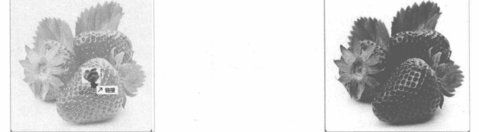
图 5-10 拖放完成后显示图像
5.3.12 示例：拖放取色器
本示例将创建颜色块组件(ColorBlock)，每个组件实例代表一种颜色。用户从颜色块组件拖动颜色到另一个面板组件（CustPanel）中，面板会接收拖放的颜色数据作为背景颜色并重新填充可视区域。
- 定义ColorBlock类，派生自QWidget，用于呈现颜色块。
class ColorBlock(QWidget):
def __init__(self, parent: QWidget = None, color: QColor = QColor('red')):
super().__init__(parent)
self._color = color
#设置默认大小
self.resize(32, 32)- 重写paintEvent方法，用指定的颜色填充组件的矩形区域（_color字段表示当前设定的颜色）。
def paintEvent(self, event: QPaintEvent):
painter = QPainter()
painter.begin(self)
#绘制当前颜色
painter.fillRect(event.rect(), self._color)
painter.end()- 重写mousePressEvent方法，当鼠标左键按下时记录鼠标指针的当前位置，保存到_pressedPos字段中。
def mousePressEvent(self, event: QMouseEvent):
if event.button() == Qt.MouseButton.LeftButton:
self._pressedPos = event.position().toPoint()- 重写mouseMoveEvent 方法，启动拖放操作。
def mouseMoveEvent(self, event: QMouseEvent):
if hasattr(self,'_pressedPos') == False:
return
if not Qt.MouseButton.LeftButton in event.buttons():
return
#获取鼠标指针的实时坐标
curPos = event.position().toPoint()
#与左键按下时的坐标比较，判断是否具备启动拖放操作的条件
if (self._pressedPos - curPos).manhattanLength() < \
QApplication.startDragDistance():
return
drag = QDrag(self)
data = QMimeData()
#设置数据
data.setColorData(self._color)
drag.setMimeData(data)
#设置拖动时的图标
icon = QPixmap('br.jpg')
#缩放图像
icon = icon.scaled(
45, 45,
Qt.AspectRatioMode.KeepAspectRatio,
Qt.TransformationMode.SmoothTransformation
)
drag.setPixmap(icon)
drag.setHotSpot(QPoint(25, 30))
#启动拖放操作
drag.exec(Qt.DropAction.CopyAction)QDrag.setPixmap 方法可以为拖放操作设置一个图标（本示例使用 JPG 格式的图像文件）。在拖动过程中，该图标会跟随鼠标指针移动。setHotSpot方法可以设置一个坐标点，该坐标表示鼠标指针相对于图标左上角的位置。
- 定义CustPanel类，作为自定义的面板组件。
class CustPanel(QWidget):
def __init__(self, parent: QWidget = None):
super().__init__(parent)
#默认颜色
self._fillColor = QColor('black')
#支持拖放操作
self.setAcceptDrops(True)fillColor字段表示用来填充背景的颜色。调用 setAcceptDrops(True)方法使组件支持拖放操作。
- 重写 dragEnterEvent 方法。
def dragEnterEvent(self, event: QDragEnterEvent):
if event.mimeData().hasColor():
event.acceptProposedAction()如果拖进来的数据表示的是颜色值，就接受事件。
- 重写dropEvent方法，完成拖放操作。
def dropEvent(self, event: QDropEvent):
if event.mimeData().hasColor():
#读取数据
data = event.mimeData()
self._fillColor = data.colorData()
event.acceptProposedAction()
#重新绘制内容
self.update()读取数据后要调用一次update方法，强制组件使用刚设置的_fillColor值重新绘制组件内容。
- 重写paintEvent方法，完成绘制过程。使用_fillColor字段提供的颜色填充矩形区域。
def paintEvent(self, event: QPaintEvent):
with QPainter(self) as painter:
painter.fillRect(event.rect(), self._fillColor)- 实例化一个QWidget对象，作为主窗口。
window = QWidget()
window.setWindowTitle('示例程序')
window.resize(500, 425)- 创建6个 ColorBlock实例，分别代表不同的颜色。
block1 = ColorBlock(window, QColor('green'))
block2 = ColorBlock(window, QColor('yellow'))
block3 =ColorBlock(window,QColor('deepskyblue'))
block4 = ColorBlock(window,QColor('hotpink'))
block5 = ColorBlock(window,QColor('red'))
block6 = ColorBlock(window, QColor('purple'))- 创建 CustPanel 实例。
panel = CustPanel(window)
panel.resize(400, 300)- 创建QGridLayout布局组件，用于放置上述各种组件对象。
layout = QGridLayout(window)
layout.addWidget(panel, 0, 0, 1, 6)
layout.addWidget(block1, 1, 0)
layout.addWidget(block2, 1, 1)
layout.addWidget(block3, 1, 2)
layout.addWidget(block4, 1, 3)
layout.addWidget(block5, 1, 4)
layout.addWidget(block6, 1, 5)
layout.setRowStretch(0, 3)
layout.setRowStretch(1, 1)
layout.setRowMinimumHeight(1,36)- 显示主窗口。
window.show()运行示例程序后，用鼠标将窗口下方的颜色块拖到窗口上半部分的黑色面板内，如图5-11所示，然后释放鼠标，会看到面板的背景变成与被拖动色块相同的颜色，如图5-12所示。
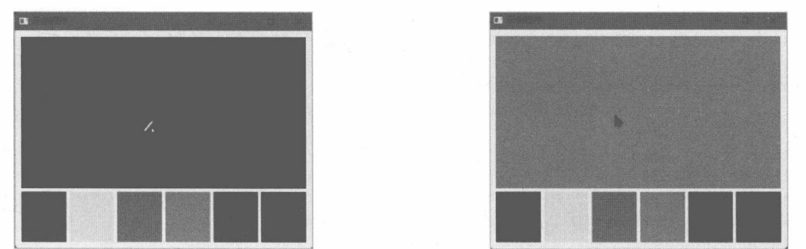
图 5-12 面板颜色发生改变
剪贴板
应用程序之间共享数据最简单的方式就是使用剪贴板。它是“复制”和“粘贴”操作的“中转站”。执行复制时，发送程序将数据内容放进剪贴板；粘贴数据时，接收程序从剪贴板读取数据内容。
QClipboard 类提供访问剪贴板相关的功能。与拖放操作相似，QClipboard 类也是使用 QMimeData对象来传递数据的。
QClipboard类公开了以下便捷方法，可以直接读写数据。
- text 和 setText：获取或设置文本内容。
- pixmap和 setPixmap：获取或设置QPixmap 对象，适合呈现在用户界面上。
- image 和 setImage：获取或设置 QImage 对象，适用于直接访问图像的像素数据。
- mimeData 和 setMimeData：获取或设置 QMimeData 对象，适用于读写自定义的数据格式。
- clear：清空剪贴板中的数据。
QClipboard类不能直接实例化，而是通过调用QGuiApplication类的方法 clipboard来获取对象实例。该方法是静态成员，可以直接在QGuiApplication类上面调用。
5.4.1 示例：复制与粘贴文本内容
本示例将实现复制文本框中输入的内容，然后粘贴并显示在标签组件上。其中用到了QClipboard类的 text、setText 和 clear 方法。
- 定义MyWidget类，表示一个自定义窗口。
class MyWidget(QWidget):
def __init__(self, parent: QWidget = None):
super().__init__(parent)
self._initUI()
#设置标题栏文本
self.setWindowTitle("复制与粘贴")
#调整窗口位置和大小
self.setGeometry(499, 325, 250, 160)- _initUI方法用于初始化窗口内的可视化组件。
def _initUI(self):
layout = QVBoxLayout(self)
#复制
self._input1 = QLineEdit()
self._btnCopy = QPushButton("复制")
self._btnCopy.clicked.connect(self._on_copy)
#粘贴
self._lb = QLabel()
self._btnPaste = QPushButton("粘贴")
self._btnPaste.clicked.connect(self._on_paste)
#清空
self._btnClear = QPushButton("清空剪贴板")
self._btnClear.clicked.connect(self._on_clear)
#将组件添加到布局
layout.addWidget(self._input1)
layout.addWidget(self._btnCopy)
#插入空白区域
layout.addSpacing(20)
layout.addWidget(self._lb)
layout.addWidget(self._btnPaste)
layout.addWidget(self._btnClear)QLineEdit组件用于接收单行文本输入，QLabel组件用来显示粘贴后的文本。“复制”按钮被单击后将QLineEdit组件中的文本放入剪贴板；“粘贴”按钮被单击后会从剪贴板读出文本，并用QLabel组件来显示；“清空剪贴板”按钮将清除剪贴板中的文本内容。QVBoxLayout布局组件的子元素将沿着垂直方向排列。
- 以下三个方法分别与_btnCopy、_btnPaste 和_btnClear 对象的 clicked 信号绑定。
def _on_copy(self):
#获取文本框的字符串
s=self._input1.text()
if len(s) == 0:
return
#执行复制
QApplication.clipboard().setText(s)
def _on_paste(self):
#执行粘贴
s = QApplication.clipboard().text()
self._lb.setText("粘贴文本："+ s)
def _on_clear(self):
#清空剪贴板
QApplication.clipboard().clear()- 实例化 MyWidget 对象，调用 show 方法显示窗口。
if __name__ == "__main__":
app = QApplication()
window = MyWidget()
window.show()
app.exec()- 运行示例程序，先在文本框内输入测试内容，并单击“复制”按钮；接着单击窗口下方的“粘贴”按钮。此时，QLabel组件上会显示被复制的文本，如图5-13所示。
- 单击“清空剪贴板”按钮，再单击“粘贴”按钮，此时，被粘贴文本为空白字符，如图5-14所示。这是因为剪贴板中的内容已被清除。
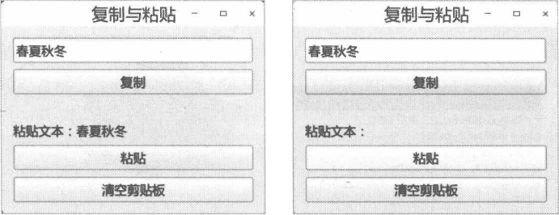
图 5-14 粘贴的内容为空
5.4.2 示例：监视剪贴板的数据变化
当剪贴板中的数据被更改时，QClipboard 对象会发出dataChanged信号。本示例通过关联dataChanged信号来实现监视剪贴板变化的功能，并及时读出其包含的图像和文本内容。
CustWindow类作为示例程序的主窗口，它里面有一个QLabel组件，用来显示来自剪贴板的文本或图像。
class CustWindow(QWidget):
def __init__(self, parent: QWidget = None):
super().__init__(parent)
#设置窗口的标题和大小
self.setWindowTitle("监视剪贴板的数据更新")
self.resize(350, 350)
#初始化可视化组件
self._lb = QLabel(self)
#获取 QClipboard 对象
clipboard = QApplication.clipboard()
#关联dataChanged信号
clipboard.dataChanged.connect(self._on_dataChanged)当收到 dataChanged 信号时，调用_on_dataChanged方法。
def _on_dataChanged(self):
#提取数据
data = QApplication.clipboard().mimeData()
if data.hasImage():
#获取图像
img:QImage = data.imageData()
#缩放图像
img = img.scaledToHeight(200)
#显示图像
self._lb.setPixmap(QPixmap(img))
elif data.hasText():
#获取并显示文本
self._lb.setText(data.text())
#调整标签组件的大小
self._lb.adjustSize()如果剪贴板中包含的内容是图像数据，QMimeData 对象将返回QImage实例。然后调用 scaledToHeight方法将图像缩放为指定的高度（示例中高度指定为 200)。调用 QLabel组件的 setPixmap方法让图像显示在标签组件上。设置文本内容只需调用 setText方法。最后通过 adjustSize方法让 QLabel组件根据所显示内容自动调整大小。
运行示例程序，从其他应用程序复制一些文本（例如网页上的内容)，随后回到示例程序界面，被复制的文本已自动显示在窗口上了，如图5-15所示。
如果复制的内容是图像数据，则QLabel组件中将显示该图像，如图5-16所示。
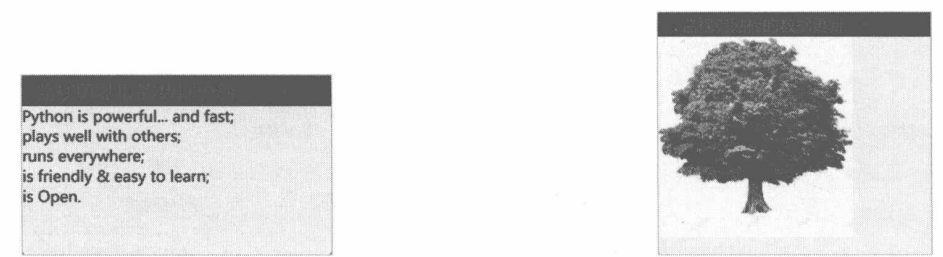
图 5-16自动粘贴图像
5.4.3 示例：复制和粘贴自定义数据
本示例将实现复制和粘贴 JSON 数据，MIME 格式为 application/json。其中使用到 Python 库中的JSONEncoder 和 JSONDecoder类（从 JSON包导入）。
- 定义MyWindow类，从QWidget类派生，表示自定义的窗口。
class MyWindow(QWidget):
...- 在 __init__ 方法中初始化应用程序的窗口布局。
def __init__(self, parent: QWidget = None):
super().__init__(parent)
#设置窗口标题
self.setWindowTitle("复制/粘贴自定义数据")
#设置窗口的位置和大小
self.setGeometry(700, 500, 300, 170)
#初始化布局组件
layout = QFormLayout(self)
#第一行：员工姓名
self._leName = QLineEdit()
layout.addRow("姓名:", self._leName)
#第二行：员工年龄
self._spAge = QSpinBox()
#设置有效范围
self._spAge.setRange(20, 65)
layout.addRow("年龄:", self._spAge)
#第三行：部门
self._lePartm = QLineEdit()
layout.addRow("部门:", self._lePartm)
#第四行：入职时间
self._pdDate = QDateEdit(QDate(2005, 10, 1))
layout.addRow("入职时间:", self._pdDate)
#第五行：操作按钮
subLayout = QHBoxLayout()
btnCopy = QPushButton("复制")
btnCopy.clicked.connect(self.onCopy)
subLayout.addWidget(btnCopy)
btnPaste = QPushButton("粘贴")
btnPaste.clicked.connect(self.onPaste)
subLayout.addWidget(btnPaste)
layout.addRow(subLayout)本示例使用的布局组件是 QFormLayout，其效果类似 HTML 中的<form>元素——表单排版。在QFormLayout布局中，每一行划分为两列。左列表示字段的标签，一般使用QLabel等组件来显示说明文本（告知用户该字段的含义，如“公司名称”“联系人”等）；右列一般使用可交互组件，如QLineEdit、QTextEdit等，用户可通过这些组件编辑数据。
表单的最后一行是两个QPushButton组件，分别是“复制”“粘贴”按钮。“复制”按钮的 clicked信号与 onCopy 方法关联，“粘贴”按钮的 clicked 信号与 onPaste 方法关联。
- 实现onCopy方法，复制数据。
def onCopy(self):
#JSON序列化
dict = {
'name': self._leName.text(),
'age': self._spAge.value(),
'part': self._lePartm.text(),
'date': self._pdDate.date().toString()
}
json = JSONEncoder(ensure_ascii=False)
jstr = json.encode(dict)
#初始化 QMimeData 对象
mimeData = QMimeData()
mimeData.setData("application/json", jstr.encode())
#把数据放入剪贴板
QApplication.clipboard().setMimeData(mimeData)
QMessageBox.information(
self, "提示", "复制成功", QMessageBox.StandardButton.Ok
)上述代码中，先用字典对象封装四个组件中输入的内容，接着用 JSONEncoder类将字典对象序列化为 JSON 字符串，最后把 JSON 字符串放进 QMimeData 对象中，并传递给 QClipboard 对象。由于QMimeData 对象的 setData 方法需要 bytes 类型的值，因此需要用 str.encode 方法将 JSON 字符串转换为字节序列，才能传递给 setData 方法。
- 实现 onPaste 方法，粘贴数据。
def onPaste(self):
#从剪贴板取出 QMimeData 对象
data = QApplication.clipboard().mimeData()
if data.hasFormat("application/json"):
b = data.data("application/json")
#还原数据
jsonstr = b.data().decode()
json = JSONDecoder()
dict = json.decode(jsonstr)
#在窗口中显示各字段的值
self._leName.setText(dict['name'])
self._spAge.setValue(dict['age'])
self._lePartm.setText(dict['part'])
qdate = QDate.fromString(dict['date'])
self._pdDate.setDate(qdate)从 JSON字符串中还原数据（反序列化）需要用到 JSONDecoder类。
- 初始化应用程序，显示自定义窗口。
if __name__ == "__main__":
app = QApplication()
win = MyWindow()
win.show()
app.exec()- 运行应用程序，在窗口中依次输入“姓名”“年龄”“部门”“入职时间”等字段的值，然后单击窗口底部的“复制”按钮。
- 重新运行应用程序，单击窗口底部的“粘贴”按钮，复制的数据会再次出现在窗口上，如图 5-17 所示。
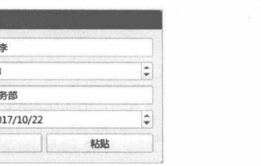
调整窗口的透明度
与窗口透明度相关的方法成员如下。
- windowOpacity：获取窗口当前透明度。返回浮点数值，0.0表示窗口完全透明，1.0表示窗口完全不透明。
- setWindowOpacity：设置窗口的透明度。参数为浮点数值，0.0表示完全透明，1.0表示完全不透明。
下面示例通过滑动条来调整窗口的透明度。
from PySide6.QtCore import *
from PySide6.QtGui import *
from PySide6.QtWidgets import *
if __name__ == "__main__":
app = QApplication()
window = QWidget()
#窗口标题
window.setWindowTitle("调整透明度")
#窗口大小
window.resize(450, 400)
#标签组件
label = QLabel("设置透明度：", window)
label.move(15, 20)
#滑动条组件（水平方向）
slider = QSlider(Qt.Orientation.Horizontal, window)
slider.setMinimumWidth(150)
slider.move(95, 23)
#设置滑动范围
slider.setRange(0, 100)
#关联 valueChanged 信号
slider.valueChanged.connect(lambda:window.setWindowOpacity(slider.value() /100))
#设置滑块的默认位置
slider.setValue(100)
#显示窗口
window.show()
app.exec()QSlider组件允许用户通过拖动滑块来设置相关的值。setRange方法用来设置滑动条的最大值和最小值。也可以用 setMinimum方法设置最小值，用setMaximum方法设置最大值。
slider.setMinimum(0)
slider.setMaximum(100)当用户拖动滑块后，QSlider组件会发出 valueChanged信号。应用程序可以关联此信号，及时调用setWindowOpacity方法修改窗口的透明度。
slider.valueChanged.connect(lambda: window.setWindowOpacity(slider.value() / 100))要注意的是，QSlider组件的值在0～100范围内，而 setWindowOpacity 方法的参数值在0~1范围内，因此 QSlider组件的值要除以100。
示例的运行效果如图5-18所示。
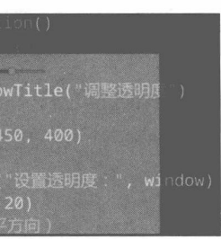
调色板
调色板（由QPalette类表示）维护着窗口组件中比较常用的颜色组，组件使用调色板所提供的颜色来绘制可视化元素。在编程阶段只要修改调色板特定项目的颜色值，即可统一应用到窗口和窗口中的组件上。例如，在调色板中将窗口上的文本颜色改为红色，那么当前应用程序中使用同一个调色板实例的所有窗口上的文本都会呈现为红色。
在调色板中，通过两个维度值可以确定一个颜色项目。
第一个是颜色组，由ColorGroup枚举定义。它表示窗口（或窗口组件）的几种常见状态。
- Active：窗口处理活动状态，即获得焦点。
- Normal：与Active一样，只是命名不同罢了。
- Disabled：窗口组件处理禁用状态（不能与用户交互，不能获取键盘输入焦点)。
- Inactive：窗口处理非活动状态，即失去焦点。
- All:表示所有状态。
第二个维度是颜色的“角色”，由ColorRole枚举定义。表示颜色的作用目标（或作用范围）如下。
- Window：窗口（或窗口组件）的背景颜色。
- WindowText：窗口（或窗口组件）的前景颜色（文本的颜色）。
- Button：按钮组件的背景颜色。
- ButtonText：按钮组件的前景颜色（按钮上的文本颜色）。
- Base：输入框等组件的背景颜色。
- Text:输入框等组件的前景色，有时候会与WindowText相同。
- Highlight：输入框中被选定文本的背景颜色。
- HighlightedText：输入框中被选定文本的前景颜色。
- PlaceholderText:输入框中占位字符的颜色。
- ToolTipBase:工具提示的背景颜色。
- ToolTipText：工具提示的文本颜色。
- AlternateBase：列表组件中交替行的背景颜色。
尽管每个 QWidget 组件都可以维护自身的调色板实例，但调色板在 QWidget 对象中存在向下传递机制—父级的调色板参数会传递给所有子级组件（窗口之间不会进行传递）。程序代码可以单独修改某个QWidget对象的调色板，覆盖从父级对象继承的调色板参数。
通常，QApplication类会维护一个全局的QPalette对象，包含系统主题相关的默认颜色，并且会应用到应用程序内所有QWidget 组件上。当然，通过QApplication.setPalette方法也可以修改全局调色板。
5.6.1 示例：切换颜色主题
本示例将演示使用调色板为应用程序定义三种颜色主题——单击窗口上的按钮可以在不同的主题之间切换。
具体实现步骤如下。
- 定义窗口类 Window，派生自 QWidget类。
class Window(QWidget):
......- 在init函数中初始化用户界面。
def __init__(self, parent: QWidget = None):
#调用基类的 __init__ 方法
super().__init__(parent)
#设置窗口标题、位置和大小
self.setWindowTitle("调色板示例")
self.setGeometry(500, 280, 260, 200)
#初始化布局组件
layout = QVBoxLayout(self)
#创建三个按钮实例
self._btn1 = QPushButton("主题 1")
self._btn2 = QPushButton("主题 2")
self._btn3 = QPushButton("主题 3")
self._lb = QLabel("示例文本")
layout.addWidget(self._lb)
layout.addWidget(self._btn1)
layout.addWidget(self._btn2)
layout.addWidget(self._btn3)
layout.setAlignment(Qt.AlignmentFlag.AlignVCenter)
#关联三个按钮的clicked信号
self._btn1.clicked.connect(self.onClicked1)
self._btn2.clicked.connect(self.onClicked2)
self._btn3.clicked.connect(self.onClicked3)示例窗口使用QVBoxLayout组件进行布局，子级组件将沿垂直方向排列。
- 下面实现与三个按钮的 clicked 信号绑定。
def onClicked1(self):
#获取调色板
palette = self.palette()
#修改调色板
palette.setColor(
QPalette.ColorRole.Window,
QColor('red')
)
palette.setColor(
QPalette.ColorRole.WindowText,
QColor('yellow')
)
palette.setColor(
QPalette.ColorRole.Button,
QColor('darkblue')
)
palette.setColor(
QPalette.ColorRole.ButtonText,
QColor('skyblue')
)
#重新设置调色板
self.setPalette(palette)
def onClicked2(self):
#获取调色板
p = self.palette()
#修改调板
p.setColor(
QPalette.ColorRole.Window,
QColor('olive')
)
p.setColor(
QPalette.ColorRole.WindowText,
QColor('darkred')
)
p.setColor(
QPalette.ColorRole.Button,
QColor('azure')
)
p.setColor(
QPalette.ColorRole.ButtonText,
QColor('green')
)
#重新设置调色板
self.setPalette(p)
def onClicked3(self):
#获取调色板
p = self.palette()
#修改调色板
p.setColor(
QPalette.ColorRole.Window,
QColor('gray')
)
p.setColor(
QPalette.ColorRole.WindowText,
QColor('lightyellow')
)
p.setColor(
QPalette.ColorRole.Button,
QColor('hotpink')
)
p.setColor(
QPalette.ColorRole.ButtonText,
QColor('white')
)
#重新设置调色板
self.setPalette(p)三个方法的实现逻辑相似，只是设置的颜色不同。首先访问当前窗口实例的palette方法获取默认调色板的引用，修改后通过setPalette方法将调色板重新应用到当前窗口上。
设置颜色可以调用setColor方法，该方法有以下两个签名（重载):
def setColor(cg: ColorGroup, cr: ColorRole, color: Union[QColor, QRgba64,Any,
Qt.GlobalColor, str, int])
def setColor(cr: ColorRole, color: Union[QColor, QRgba64, Any, Qt.GlobalColor, str,
int])本示例使用的是省略了ColorGroup参数的方法，因此所设置的颜色将应用到所有状态，相当于以下调用方式。
palette.setColor(
QPalette.ColorGroup.All,
QPalette.ColorRole.Window,
QColor('black')
)- 初始化应用程序，并创建Window实例，显示窗口。
if __name__ == "__main__":
app = QApplication()
w = Window()
#显示窗口
w.show()
#启动事件循环
QApplication.exec()- 运行示例程序，此时应用窗口使用的系统默认的主题，如图5-19所示。
- 单击窗口上任意按钮切换颜色主题，如图5-20所示。
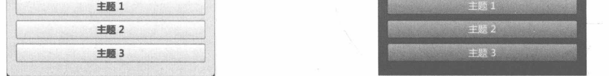
图 5-20 切换主题
5.6.2 示例：带纹理的背景画刷
调色板（QPalette）可以通过调用 setBrush 方法，为指定的颜色角色设置画刷。画刷用 QBrush类表示，它既可以用纯颜色填充目标对象，也可以使用图像文件作为纹理，并填充目标对象。
本示例将使用图像文件中的纹理来填充文本输入组件（QLineEdit、QTextEdit)。要设置的颜色角色为 ColorRole.Base。
自定义窗口继承QScrollArea类，在调整窗口大小时，如果窗口的尺寸小于内容的尺寸，将自动显示滚动条。具体代码如下：
class CustWindow(QScrollArea):
def __init__(self, parent: QWidget = None):
super().__init__(parent)
#设置窗口标题
self.setWindowTitle("Demo App")
#窗口位置
self.move(516, 310)
#窗口大小
self.resize(350, 300)#布局组件
layout = QFormLayout(self)
#字段1
layout.addRow("学号：", QLineEdit())
#字段2
layout.addRow("姓名：",QLineEdit())
#字段3
spbox = QSpinBox()
spbox.setRange(10, 27)
layout.addRow("年龄：", spbox)
#字段4
layout.addRow("自我介绍：",QTextEdit())
#子级组件的容器
container = QWidget()
#必须调用下面的方法，滚动条才会起作用
container.setMinimumSize(400, 300)
container.setLayout(layout)
self.setWidget(container)
#获取调色板引用
pal = self.palette()
#修改背景画刷
pxmap = QPixmap("txc.jpg")
brush = QBrush(pxmap)
pal.setBrush(QPalette.ColorRole.Base,brush)
#修改输入框前景颜色
pal.setColor(QPalette.ColorRole.Text, QColor("white"))
#重新设置调色板
self.setPalette(pal)CustWindow 继承了QScrollArea 类，并且 QScrollArea 类的内容区域是通过 setWidget 方法设置的—窗口的内容必须是单个QWidget对象。因此，上述代码先创建一个QWidget实例（container变量）作为子级组件的容器，然后调用setLayout方法设置布局对象，其结构如图5-21所示。
示例的运行效果如图5-22所示。
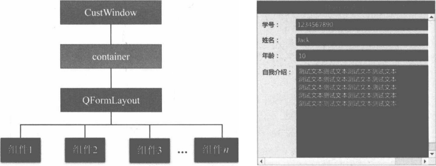
图 5-22 带纹理的输入框背景